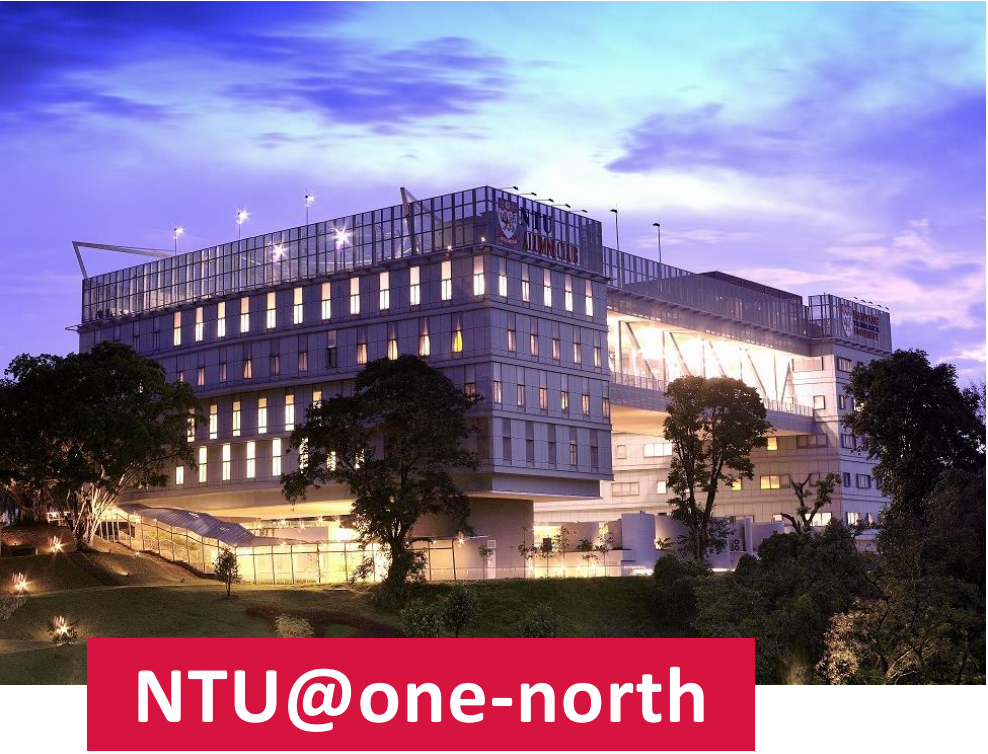

RTCSA 2025 and NVMSA 2025 will be held at the One-North campus of Nanyang Technological University (NTU), located at 11 Slim Barracks Rise. This campus is different from the main campus of NTU and closer to the downtown area. For more details about the One-North campus, please visit: https://www.ntu.edu.sg/life-at-ntu/leisure-and-dining/ntu@one-north
Here are the spaces for the conference sessions and activities:
| Activity | Location |
|---|---|
| Tutorial | Seminar Room 706, Level 7 |
| Registration desk | Concourse Area, Level 3 |
| Joint keynotes | Auditorium 302, Level 3 |
| RTCSA paper sessions | Auditorium 302, Level 3 |
| NVMSA paper sessions | Lecture Theatre 301, Level 3 |
| Reception | Function Hall, Level 1 |
| Banquet | Peach Garden @ OCBC Centre Round-trip shuttle service will be provided. One-way travel time is about 30 minutes by shuttlebus. |
The organization team has negotiated group rates for hotel rooms at Park Avenue Rochester, which is within 6-minute walk distance from the conference venue. Please check the details at accommodations
